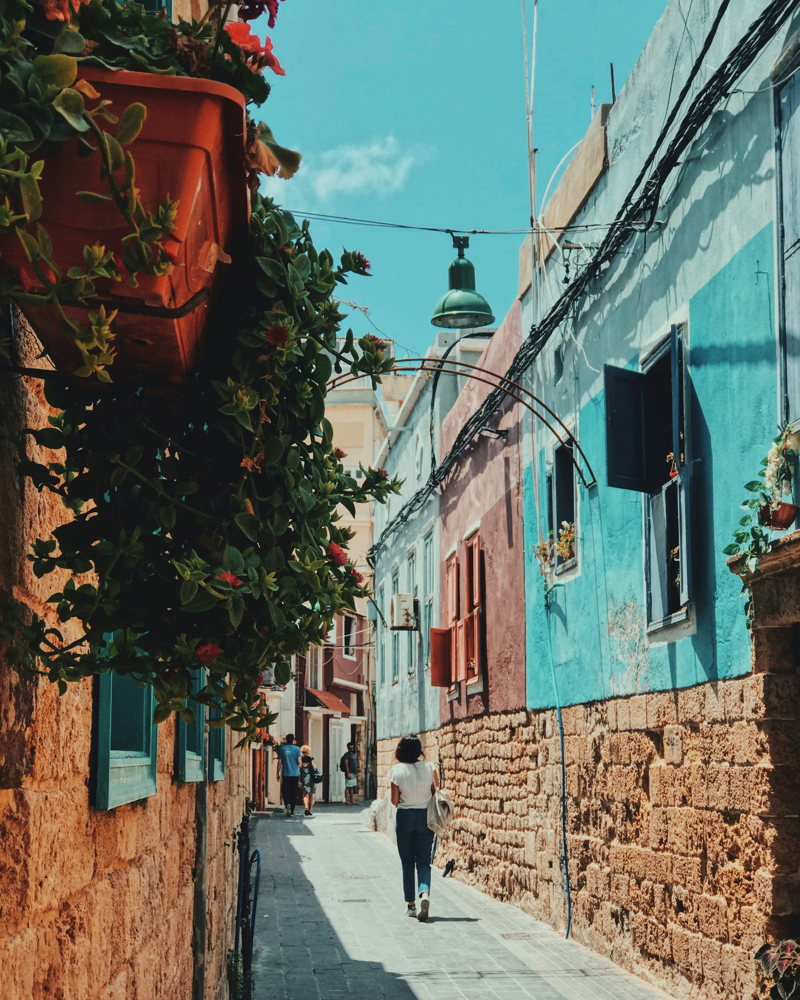

.............LEBANON.............
As someone who's lived in Lebanon and experienced its complexities firsthand, I understand the depth of corruption within my government and how it impacts our daily lives. It's a reality we, as Lebanese, navigate daily, often using humor as our shield and sword. This website is my tribute to our collective resilience. It's a platform where we confront our struggles with a smile, using satire as our language. It’s a reflection of how we, the Lebanese people, have adapted to laugh through our challenges, turning our frustrations into jokes that echo our shared experiences and our hopes for change. Below is just a hint of what my piple deal with on a daily.
-
Homeless
300k -
Electricity
5% -
Water Quality
Sea -
Low Class
53%
My Website (RTV)
In Lebanon, a country marked by its diversity and complexity, the landscape of news is as varied as its people. Recognizing the influence of media and its often one-sided narratives, I've embarked on creating "RTV" – a playful nod to "Real TV," drawing inspiration from the well-known MTV Lebanon but with a twist. This endeavor is more than just a parody; it's an attempt to cut through the bias that colors much of our national media, each outlet often tethered to its political or sectarian leanings.
With Lebanon being home to over 18 different religious sects, divergence in opinion is the norm, not the exception. This diversity, while a testament to our rich cultural tapestry, also sows the seeds of conflict, as not everyone sees eye to eye. It's in this environment that news channels, intentionally or not, become mouthpieces for their respective affiliations, leaving the public yearning for a source that simply tells it like it is. RTV, with its logo and color scheme reminiscent of MTV, aims to be that breath of fresh air. By adopting the "Benzin Complete Family bold font," we nod to the familiar while steering clear of affiliations, promising an unbiased lens through which the myriad voices of Lebanon can be heard. My goal is to present news and satire that reflect the real Lebanon - unfiltered, unaligned, and unapologetic.
This website is not just a project; it's a statement. A declaration that amidst the cacophony of biased narratives, there can be a space that celebrates the diversity of Lebanese thought without succumbing to the divisiveness that often accompanies it. It's a commitment to portray Lebanon in all its complexity, humor, and resilience, encouraging dialogue and understanding across our many divides.
I am excited to embark on this journey with RTV, confident in my direction, style, and the references we choose to make. This isn't just about creating content; it's about crafting a platform that mirrors the real conversations, challenges, and humor that pulse through the streets of Lebanon. With anticipation and a clear vision, I look forward to bringing RTV to life, offering a new narrative that truly represents the Lebanese spirit in all its multifaceted glory.